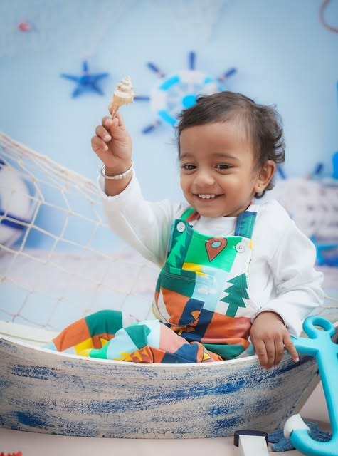

Newborn, baby and toddler photoshoots in Chennai
Book on WhatsAppBlink, and you’ll miss the magic.


Before you book
- Certified baby photographer and baby stylistNewborn, baby and toddler shoots
- Packages start from ₹2,999Ask the studio what each package includes
- Thoraipakkam, ChennaiOpen in Google Maps
- Maternity shoots@liya_maternity_photoshoot